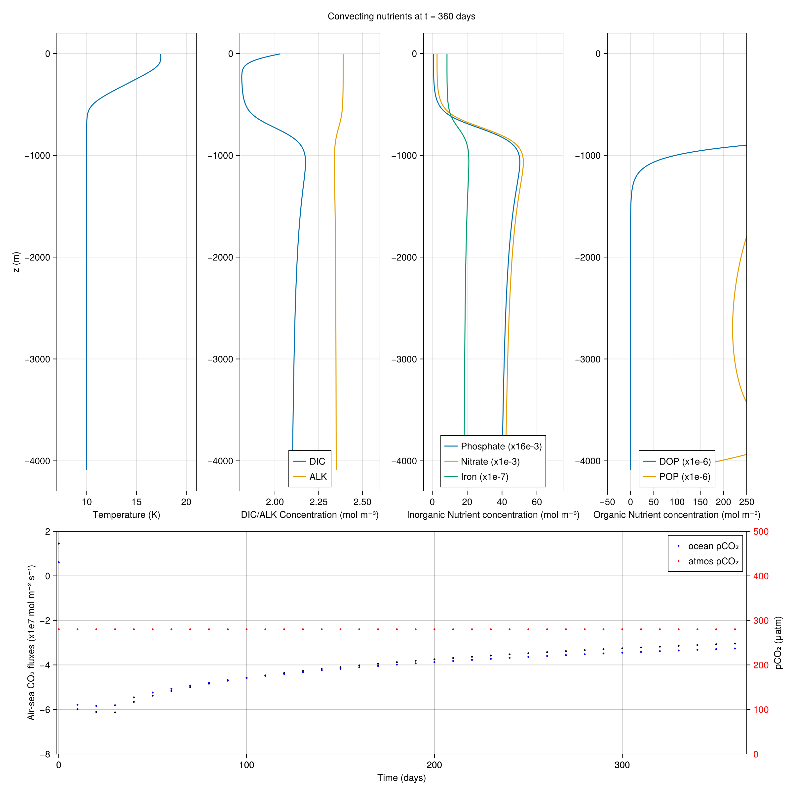

Simple carbon cycle biogeochemistry model
This example illustrates how to use ClimaOceanBiogeochemistry's CarbonAlkalinityNutrients model in a single column context.
using ClimaOceanBiogeochemistry: CarbonAlkalinityNutrients
using ClimaOceanBiogeochemistry.CarbonSystemSolvers.UniversalRobustCarbonSolver: UniversalRobustCarbonSystem
using ClimaOceanBiogeochemistry.CarbonSystemSolvers: CarbonCoefficientParameters
using Oceananigans
using Oceananigans.Units
using Oceananigans.TurbulenceClosures: CATKEVerticalDiffusivity
using Adapt
using KernelAbstractions: @kernel, @index
using Oceananigans.Utils: launch!
using Printf
using CairoMakie
arch = CPU()Oceananigans.Architectures.CPU()A single column grid
We set up a single column grid with 4 m grid spacing that's 256 m deep:
grid = RectilinearGrid(
arch,
size = 512,
z = (-4096, 0),
topology = (
Flat, Flat, Bounded
),
)1×1×512 RectilinearGrid{Float64, Oceananigans.Grids.Flat, Oceananigans.Grids.Flat, Oceananigans.Grids.Bounded} on Oceananigans.Architectures.CPU with 0×0×3 halo
├── Flat x
├── Flat y
└── Bounded z ∈ [-4096.0, 0.0] regularly spaced with Δz=8.0Buoyancy that depends on temperature and salinity
We use the SeawaterBuoyancy model with a linear equation of state, where thermal expansion
αᵀ = 2e-4
#and haline contraction
βˢ = 8e-4Boundary conditions
We calculate the surface temperature flux associated with surface cooling of 200 W m⁻², reference density ρₒ, and heat capacity cᴾ, To illustrate the dynamics of CarbonAlkalinityNutrients, this strong convection drives turbulent mixing for 4 days, and then abruptly shuts off. Once the convective turbulence dies down, plankton start to grow.
Qʰ = 200.0 # W m⁻², surface _heat_ flux
ρₒ = 1026.0 # kg m⁻³, average density at the surface of the world ocean
cᴾ = 3991.0 # J K⁻¹ kg⁻¹, typical heat capacity for seawater
Qᵀ(t) = ifelse(t < 30days, Qʰ / (ρₒ * cᴾ), 0.0) # K m s⁻¹, surface _temperature_ flux
T_bcs = FieldBoundaryConditions(
top = FluxBoundaryCondition(Qᵀ)
)Oceananigans.FieldBoundaryConditions, with boundary conditions
├── west: DefaultBoundaryCondition (FluxBoundaryCondition: Nothing)
├── east: DefaultBoundaryCondition (FluxBoundaryCondition: Nothing)
├── south: DefaultBoundaryCondition (FluxBoundaryCondition: Nothing)
├── north: DefaultBoundaryCondition (FluxBoundaryCondition: Nothing)
├── bottom: DefaultBoundaryCondition (FluxBoundaryCondition: Nothing)
├── top: FluxBoundaryCondition: ContinuousBoundaryFunction Qᵀ at (Nothing, Nothing, Nothing)
└── immersed: DefaultBoundaryCondition (FluxBoundaryCondition: Nothing)For air-sea CO₂ fluxes, we use a FluxBoundaryCondition for the "top" of the DIC tracer. We'll write a callback to calculate the flux every time step.
co₂_flux = Field{Center, Center, Nothing}(grid)
dic_bcs = FieldBoundaryConditions(
top = FluxBoundaryCondition(co₂_flux)
)
# These are filled in compute_co₂_flux!
ocean_pCO₂ = Field{Center, Center, Nothing}(grid)
atmos_pCO₂ = Field{Center, Center, Nothing}(grid)
pH = Field{Center, Center, Nothing}(grid)
set!(pH, 8.0)
cmhr⁻¹_per_ms⁻¹ = 1 / 3.6e5 # conversion factor from cm/hr to m/s
# Supply some coefficients and external data for the CO₂ flux calculation
Base.@kwdef struct CO₂_flux_parameters
surface_wind_speed = 10. # ms⁻¹
applied_pressure = 0.0 # atm
atmospheric_pCO₂ = 280e-6 # atm
exchange_coefficient = 0.337 # cm hr⁻¹
reference_density = 1024.5 # kg m⁻³
end
adapt_structure(
to, cp::CO₂_flux_parameters
) = CO₂_flux_parameters(
adapt(to, cp.surface_wind_speed),
adapt(to, cp.applied_pressure),
adapt(to, cp.atmospheric_pCO₂),
adapt(to, cp.exchange_coefficient),
adapt(to, cp.reference_density),
)
"""
compute_schmidt_dic(
grid,
schmidt_number_dic,
temperature,
)
Compute the Schmidt number for dissolved inorganic carbon (DIC) based on the temperature Θᶜ (in degrees Celsius).
Arguments:
- `grid::RectilinearGrid`: The model grid.
- `schmidt_number_dic::Field{Center, Center, Nothing}`: The computed Schmidt number for DIC.
- `temperature::Field{Center, Center, Nothing}`: Temperature in degrees Celsius.
- `kˢᶜ::CarbonCoefficientParameters`: The parameters for the Schmidt number calculation.
"""
@kernel function compute_schmidt_dic!(
grid,
schmidt_number_dic,
temperature,
kˢᶜ = CarbonCoefficientParameters(
a₀ = 2116.8,
a₁ = 136.25,
a₂ = 4.7353,
a₃ = 9.2307e-2,
a₄ = 7.555e-4,
a₅ = 660.0,
),
)
i, j = @index(Global, NTuple)
k = size(grid, 3)
schmidt_number_dic[i, j, 1] = (
kˢᶜ.a₀ -
kˢᶜ.a₁ * temperature[i, j, k] +
kˢᶜ.a₂ * temperature[i, j, k]^2 -
kˢᶜ.a₃ * temperature[i, j, k]^3 +
kˢᶜ.a₄ * temperature[i, j, k]^4
) / kˢᶜ.a₅
end
"""
compute_piston_velocity(
grid,
piston_velocity,
surface_wind_speed,
exchange_coefficient,
schmidt_number,
)
Compute the piston velocity for gas exchange at the ocean surface.
Arguments:
- `grid::RectilinearGrid`: The model grid.
- `piston_velocity::Field{Center, Center, Nothing}`: The computed piston velocity.
- `surface_wind_speed::Field{Center, Center, Nothing}`: The wind speed at the ocean surface.
- `exchange_coefficient::Float64`: The gas exchange coefficient.
- `schmidt_number::Field{Center, Center, Nothing}`: The Schmidt number.
"""
@kernel function compute_piston_velocity!(
grid,
piston_velocity,
surface_wind_speed,
exchange_coefficient,
schmidt_number
)
i, j = @index(Global, NTuple)
piston_velocity[i, j, 1] = exchange_coefficient[i, j, 1] *
surface_wind_speed[i, j, 1]^2 /
sqrt(schmidt_number[i, j, 1])
end
"""
solve_ocean_pCO₂!(
grid,
reference_density,
ocean_pCO₂,
atmospheric_CO₂_solubility,
oceanic_CO₂_solubility,
Θᶜ, Sᴬ, Δpᵦₐᵣ, Cᵀ, Aᵀ, Pᵀ, Siᵀ, pH, pCO₂ᵃᵗᵐ
)
Compute the oceanic pCO₂ using the UniversalRobustCarbonSystem solver.
Arguments:
- `grid::RectilinearGrid`: The model grid.
- `reference_density::Float64`: The reference density of seawater.
- `ocean_pCO₂::Field{Center, Center, Nothing}`: The computed oceanic pCO₂.
- `atmospheric_CO₂_solubility::Field{Center, Center, Nothing}`: The solubility of CO₂ in the atmosphere.
- `oceanic_CO₂_solubility::Field{Center, Center, Nothing}`: The solubility of CO₂ in the ocean.
- `Θᶜ::Field{Center, Center, Nothing}`: Temperature in degrees Celsius.
- `Sᴬ::Field{Center, Center, Nothing}`: Salinity in PSU.
- `Δpᵦₐᵣ::Field{Center, Center, Nothing}`: Applied pressure in atm.
- `Cᵀ::Field{Center, Center, Nothing}`: Total dissolved inorganic carbon (DIC) in mol kg⁻¹.
- `Aᵀ::Field{Center, Center, Nothing}`: Total alkalinity (ALK) in mol kg⁻¹.
- `Pᵀ::Field{Center, Center, Nothing}`: Phosphate concentration in mol kg⁻¹.
- `pH::Field{Center, Center, Center}`: The computed pH.
- `pCO₂ᵃᵗᵐ::Field{Center, Center, Nothing}`: The partial pressure of CO₂ in the atmosphere.
"""
@kernel function solve_ocean_pCO₂!(
grid,
solver_params,
reference_density,
ocean_pCO₂,
atmospheric_CO₂_solubility,
oceanic_CO₂_solubility,
temperature,
salinity,
applied_pressure_bar,
DIC,
ALK,
PO4,
pH,
atmosphere_pCO₂
)
i, j = @index(Global, NTuple)
k = size(grid, 3)
# compute oceanic pCO₂ using the UniversalRobustCarbonSystem solver
CarbonSolved = UniversalRobustCarbonSystem(;
pH = pH[i, j, 1],
pCO₂ᵃᵗᵐ = atmosphere_pCO₂[i, j, 1],
Θᶜ = temperature[i, j, k],
Sᴬ = salinity[i, j, k],
Δpᵦₐᵣ = applied_pressure_bar[i, j, 1],
Cᵀ = DIC[i, j, k]/reference_density,
Aᵀ = ALK[i, j, k]/reference_density,
Pᵀ = PO4[i, j, k]/reference_density,
solver_params...,
)
ocean_pCO₂[i, j, 1] = CarbonSolved.pCO₂ᵒᶜᵉ
atmospheric_CO₂_solubility[i, j, 1] = CarbonSolved.Pᵈⁱᶜₖₛₒₗₐ
oceanic_CO₂_solubility[i, j, 1] = CarbonSolved.Pᵈⁱᶜₖₛₒₗₒ
pH[i, j, 1] = CarbonSolved.pH
end
"""
compute_CO₂_flux(
grid,
CO₂_flux,
piston_velocity,
atmospheric_pCO₂,
oceanic_pCO₂,
atmospheric_CO₂_solubility,
oceanic_CO₂_solubility,
reference_density
)
Compute the flux of CO₂ between the atmosphere and the ocean.
Arguments:
- `grid::RectilinearGrid`: The model grid.
- `reference_density::Float64`: The reference density of seawater.
- `CO₂_flux::Field{Center, Center, Nothing}`: The computed CO₂ flux.
- `piston_velocity::Field{Center, Center, Nothing}`: The piston velocity for gas exchange at the ocean surface.
- `atmospheric_pCO₂::Float64`: The partial pressure of CO₂ in the atmosphere.
- `oceanic_pCO₂::Field{Center, Center, Nothing}`: The partial pressure of CO₂ in the ocean.
- `atmospheric_CO₂_solubility::Field{Center, Center, Nothing}`: The solubility of CO₂ in the atmosphere.
- `oceanic_CO₂_solubility::Field{Center, Center, Nothing}`: The solubility of CO₂ in the ocean.
Notes:
The convention is that a positive flux is upwards (outgassing), and a negative flux is downwards (uptake).
"""
@kernel function compute_CO₂_flux!(
grid,
reference_density,
CO₂_flux,
piston_velocity,
atmospheric_pCO₂,
oceanic_pCO₂,
atmospheric_CO₂_solubility,
oceanic_CO₂_solubility,
)
i, j = @index(Global, NTuple)
# compute CO₂ flux (-ve for uptake, +ve for outgassing since convention is +ve upwards)
CO₂_flux[i, j, 1] = - piston_velocity[i, j, 1] * (
atmospheric_pCO₂[i, j, 1] * atmospheric_CO₂_solubility[i, j, 1] -
oceanic_pCO₂[i, j, 1] * oceanic_CO₂_solubility[i, j, 1]
) * reference_density # Convert mol kg⁻¹ m s⁻¹ to mol m⁻² s⁻¹
end
"""
calculate_air_sea_carbon_exchange!(simulation; solver_params = ())
Returns the tendency of DIC in the top layer due to air-sea CO₂ flux
using the piston velocity formulation of Wanninkhof (1992) and the
solubility/activity of CO₂ in seawater.
"""
@inline function calculate_air_sea_carbon_exchange!(simulation, solver_params = ())
grid = simulation.model.grid
# get coefficients from CO₂_flux_parameters struct
# I really want the option to take these from the model
(; surface_wind_speed,
applied_pressure,
atmospheric_pCO₂,
exchange_coefficient,
reference_density,
) = CO₂_flux_parameters()
# Access model fields
CO₂_flux = simulation.model.tracers.DIC.boundary_conditions.top.condition
temperature = simulation.model.tracers.T
salinity = simulation.model.tracers.S
DIC = simulation.model.tracers.DIC
ALK = simulation.model.tracers.ALK
PO₄ = simulation.model.tracers.PO₄
# compute schmidt number for DIC
schmidt_dic = Field{Center, Center, Nothing}(grid)
set!(schmidt_dic, 0)
kernel_args = (
grid,
schmidt_dic,
temperature,
)
launch!(arch,
grid,
:xy,
compute_schmidt_dic!,
kernel_args...,
)
# compute gas exchange coefficient/piston velocity and correct with Schmidt number
wind_speed = Field{Center, Center, Nothing}(grid)
set!(wind_speed, surface_wind_speed)
average_exchange_coefficient = Field{Center, Center, Nothing}(grid)
set!(average_exchange_coefficient, exchange_coefficient*cmhr⁻¹_per_ms⁻¹)
piston_velocity = Field{Center, Center, Nothing}(grid)
set!(piston_velocity, 0)
kernel_args = (
grid,
piston_velocity,
wind_speed,
average_exchange_coefficient,
schmidt_dic,
)
# This is a 2d only kernel, so no need for custom kernel_size to handle slicing of 3d inputs
launch!(arch,
grid,
:xy,
compute_piston_velocity!,
kernel_args...,
)
# compute oceanic pCO₂ using the UniversalRobustCarbonSystem solver
set!(atmos_pCO₂, atmospheric_pCO₂)
applied_pressure_bar = Field{Center, Center, Nothing}(grid)
set!(applied_pressure_bar, applied_pressure)
atmospheric_CO₂_solubility = Field{Center, Center, Nothing}(grid)
oceanic_CO₂_solubility = Field{Center, Center, Nothing}(grid)
kernel_args = (
grid,
solver_params,
reference_density,
ocean_pCO₂,
atmospheric_CO₂_solubility,
oceanic_CO₂_solubility,
temperature,
salinity,
applied_pressure_bar,
DIC,
ALK,
PO₄,
pH,
atmos_pCO₂,
)
launch!(arch,
grid,
:xy,
solve_ocean_pCO₂!,
kernel_args...,
)
# compute CO₂ flux (-ve for uptake, +ve for outgassing since convention is +ve upwards)
kernel_args = (
grid,
reference_density,
CO₂_flux,
piston_velocity,
atmos_pCO₂,
ocean_pCO₂,
atmospheric_CO₂_solubility,
oceanic_CO₂_solubility,
)
launch!(arch,
grid,
:xy,
compute_CO₂_flux!,
kernel_args...,
)
return nothing
endMain.calculate_air_sea_carbon_exchange!We put the pieces together
The important line here is biogeochemistry = CarbonAlkalinityNutrients(; grid). We adjust some of the parameters of the model to make the simulation more interesting.
model = HydrostaticFreeSurfaceModel(;
grid,
biogeochemistry = CarbonAlkalinityNutrients(; grid,
maximum_net_community_production_rate = 1/365.25day,
PAR_attenuation_scale = 100.,
particulate_organic_phosphorus_sinking_velocity = -10 / day,
),
closure = ScalarDiffusivity(κ=1e-4),
tracers = (
:T, :S, :DIC, :ALK, :PO₄, :NO₃, :DOP, :POP, :Fe
),
tracer_advection = WENO(),
buoyancy = SeawaterBuoyancy(
equation_of_state = LinearEquationOfState(
thermal_expansion = αᵀ,
haline_contraction = βˢ
),
),
boundary_conditions = (;
T=T_bcs, DIC=dic_bcs
),
)HydrostaticFreeSurfaceModel{CPU, RectilinearGrid}(time = 0 seconds, iteration = 0)
├── grid: 1×1×512 RectilinearGrid{Float64, Oceananigans.Grids.Flat, Oceananigans.Grids.Flat, Oceananigans.Grids.Bounded} on Oceananigans.Architectures.CPU with 0×0×3 halo
├── timestepper: QuasiAdamsBashforth2TimeStepper
├── tracers: (T, S, DIC, ALK, PO₄, NO₃, DOP, POP, Fe)
├── closure: ScalarDiffusivity{ExplicitTimeDiscretization}(ν=0.0, κ=(T=0.0001, S=0.0001, DIC=0.0001, ALK=0.0001, PO₄=0.0001, NO₃=0.0001, DOP=0.0001, POP=0.0001, Fe=0.0001))
├── buoyancy: SeawaterBuoyancy with g=9.80665 and LinearEquationOfState(thermal_expansion=0.0002, haline_contraction=0.0008) with ĝ = NegativeZDirection()
├── advection scheme:
│ ├── momentum: Centered reconstruction order 2
│ ├── T: WENO reconstruction order 5
│ ├── S: WENO reconstruction order 5
│ ├── DIC: WENO reconstruction order 5
│ ├── ALK: WENO reconstruction order 5
│ ├── PO₄: WENO reconstruction order 5
│ ├── NO₃: WENO reconstruction order 5
│ ├── DOP: WENO reconstruction order 5
│ ├── POP: WENO reconstruction order 5
│ └── Fe: WENO reconstruction order 5
└── coriolis: NothingInitial conditions
Temperature initial condition: a stable density gradient with random noise superposed. Random noise damped at top and bottom we also impose a temperature gradient dTdz
dTdz = 0.02 # K m⁻¹
# Random noise
Ξ(z) = randn() * z / model.grid.Lz * (1 + z / model.grid.Lz)
zᶜʳⁱᵗ = -500
fᶻ = dTdz * model.grid.Lz * 1e-68.192e-5Temperature profile
Tᵢ(z) = ifelse(
z > zᶜʳⁱᵗ,
20 + dTdz * z + fᶻ * Ξ(z),
20 + dTdz * zᶜʳⁱᵗ + fᶻ * Ξ(z),
)Tᵢ (generic function with 1 method)We initialize the model with reasonable salinity and carbon/alkalinity/nutrient concentrations
Sᵢ(z) = 35.0 # psu
DICᵢ(z) = 2.1 # mol/m³
ALKᵢ(z) = 2.35 # mol/m³
PO₄ᵢ(z) = 2.5e-3 # mol/m³
NO₃ᵢ(z) = 42e-3 # mol/m³
DOPᵢ(z) = 0.0 # mol/m³
POPᵢ(z) = 0.0 # mol/m³
Feᵢ(z) = 2.e-6 # mol/m³
set!(
model,
T = Tᵢ,
S = Sᵢ,
DIC = DICᵢ,
ALK = ALKᵢ,
PO₄ = PO₄ᵢ,
NO₃ = NO₃ᵢ,
DOP = DOPᵢ,
POP = POPᵢ,
Fe = Feᵢ
)A simulation of physical-biological interaction
We run the simulation for 30 days with a time-step of 10 minutes.
simulation = Simulation(
model,
Δt=1minute,
stop_time=365.25days
)Simulation of HydrostaticFreeSurfaceModel{CPU, RectilinearGrid}(time = 0 seconds, iteration = 0)
├── Next time step: 1 minute
├── Elapsed wall time: 0 seconds
├── Wall time per iteration: NaN days
├── Stop time: 365.250 days
├── Stop iteration : Inf
├── Wall time limit: Inf
├── Callbacks: OrderedDict with 4 entries:
│ ├── stop_time_exceeded => Callback of stop_time_exceeded on IterationInterval(1)
│ ├── stop_iteration_exceeded => Callback of stop_iteration_exceeded on IterationInterval(1)
│ ├── wall_time_limit_exceeded => Callback of wall_time_limit_exceeded on IterationInterval(1)
│ └── nan_checker => Callback of NaNChecker for u on IterationInterval(100)
├── Output writers: OrderedDict with no entries
└── Diagnostics: OrderedDict with no entriesWe add a TimeStepWizard callback to adapt the simulation's time-step...
wizard = TimeStepWizard(
cfl=0.2,
max_change=1.1,
max_Δt=60minutes,
)
simulation.callbacks[:wizard] = Callback(
wizard,
IterationInterval(100),
)Callback of TimeStepWizard(cfl=0.2, max_Δt=3600.0, min_Δt=0.0) on IterationInterval(100)...and we emit a message with information on DIC, ALK, and CO₂ flux tendencies.
DIC₀ = Field{Center, Center, Nothing}(grid)
ALK₀ = Field{Center, Center, Nothing}(grid)
"""
Function to print DIC, ALK, and CO₂ flux tendency during the simulation
"""
function progress(simulation)
@printf("Iteration: %d, time: %s\n",
iteration(simulation),
prettytime(simulation),
)
Nz = size(simulation.model.grid, 3)
if iteration(simulation) == 1
# Establish and set initial values for the anomaly fields
DIC₀[1, 1, 1] = simulation.model.tracers.DIC[1, 1, Nz]
ALK₀[1, 1, 1] = simulation.model.tracers.ALK[1, 1, Nz]
else
@printf("Surface DIC tendency (x10⁻⁷ mol m⁻³ s⁻¹): %.12f\n",
((simulation.model.tracers.DIC[1, 1, grid.Nz]-
DIC₀[1, 1, 1])/simulation.Δt
) * 1e7)
@printf("Surface ALK tendency (x10⁻⁷ mol m⁻³ s⁻¹): %.12f\n",
((simulation.model.tracers.ALK[1, 1, grid.Nz]-
ALK₀[1, 1, 1])/simulation.Δt
) * 1e7)
@printf("Surface CO₂ flux (x10⁻⁷ mol m⁻³ s⁻¹): %.12f\n",
(simulation.model.tracers.DIC.boundary_conditions.top.condition[1,1]
) * 1e7)
# update the anomaly fields
DIC₀[1, 1, 1] = simulation.model.tracers.DIC[1, 1, Nz]
ALK₀[1, 1, 1] = simulation.model.tracers.ALK[1, 1, Nz]
end
end
simulation.callbacks[:progress] = Callback(
progress,
IterationInterval(100),
)Callback of progress on IterationInterval(100)Dont forget to add the callback to compute the CO₂ flux
add_callback!(simulation, calculate_air_sea_carbon_exchange!)Output writer
filename = "single_column_carbon_alkalinity_nutrients.jld2"
fout=10days
simulation.output_writers[:fields] = JLD2OutputWriter(
model, model.tracers;
filename,
schedule = TimeInterval(fout),
overwrite_existing = true,
)
filename_diags = "single_column_carbon_alkalinity_nutrients_co2flux.jld2"
outputs = (; co₂_flux, ocean_pCO₂, atmos_pCO₂)
simulation.output_writers[:jld2] = JLD2OutputWriter(
model, outputs;
filename = filename_diags,
schedule = TimeInterval(fout),
overwrite_existing = true,
)JLD2OutputWriter scheduled on TimeInterval(10 days):
├── filepath: ./single_column_carbon_alkalinity_nutrients_co2flux.jld2
├── 3 outputs: (co₂_flux, ocean_pCO₂, atmos_pCO₂)
├── array type: Array{Float64}
├── including: [:grid, :coriolis, :buoyancy, :closure]
├── file_splitting: NoFileSplitting
└── file size: 0.0 BRun the example
run!(simulation)[ Info: Initializing simulation...
Iteration: 0, time: 0 seconds
Surface DIC tendency (x10⁻⁷ mol m⁻³ s⁻¹): 318181.818181818235
Surface ALK tendency (x10⁻⁷ mol m⁻³ s⁻¹): 356060.606060606078
Surface CO₂ flux (x10⁻⁷ mol m⁻³ s⁻¹): 0.000000000000
[ Info: ... simulation initialization complete (5.894 seconds)
[ Info: Executing initial time step...
[ Info: ... initial time step complete (11.479 seconds).
Iteration: 100, time: 1.833 hours
Surface DIC tendency (x10⁻⁷ mol m⁻³ s⁻¹): -844.438300347376
Surface ALK tendency (x10⁻⁷ mol m⁻³ s⁻¹): 113.509872906240
Surface CO₂ flux (x10⁻⁷ mol m⁻³ s⁻¹): 1.097066718776
Iteration: 200, time: 3.850 hours
Surface DIC tendency (x10⁻⁷ mol m⁻³ s⁻¹): -826.112017829319
Surface ALK tendency (x10⁻⁷ mol m⁻³ s⁻¹): 111.585130711948
Surface CO₂ flux (x10⁻⁷ mol m⁻³ s⁻¹): 0.730043263674
Iteration: 300, time: 6.068 hours
Surface DIC tendency (x10⁻⁷ mol m⁻³ s⁻¹): -806.432363528353
Surface ALK tendency (x10⁻⁷ mol m⁻³ s⁻¹): 109.482893337232
Surface CO₂ flux (x10⁻⁷ mol m⁻³ s⁻¹): 0.355515287830
Iteration: 400, time: 8.509 hours
Surface DIC tendency (x10⁻⁷ mol m⁻³ s⁻¹): -785.326717444493
Surface ALK tendency (x10⁻⁷ mol m⁻³ s⁻¹): 107.189289709580
Surface CO₂ flux (x10⁻⁷ mol m⁻³ s⁻¹): -0.024704296614
Iteration: 500, time: 11.193 hours
Surface DIC tendency (x10⁻⁷ mol m⁻³ s⁻¹): -762.722621821423
Surface ALK tendency (x10⁻⁷ mol m⁻³ s⁻¹): 104.690096952216
Surface CO₂ flux (x10⁻⁷ mol m⁻³ s⁻¹): -0.408634895415
Iteration: 600, time: 14.145 hours
Surface DIC tendency (x10⁻⁷ mol m⁻³ s⁻¹): -738.549340427387
Surface ALK tendency (x10⁻⁷ mol m⁻³ s⁻¹): 101.970982730119
Surface CO₂ flux (x10⁻⁷ mol m⁻³ s⁻¹): -0.794155908669
Iteration: 700, time: 17.393 hours
Surface DIC tendency (x10⁻⁷ mol m⁻³ s⁻¹): -712.739846581322
Surface ALK tendency (x10⁻⁷ mol m⁻³ s⁻¹): 99.017842415978
Surface CO₂ flux (x10⁻⁷ mol m⁻³ s⁻¹): -1.179039714063
Iteration: 800, time: 20.966 hours
Surface DIC tendency (x10⁻⁷ mol m⁻³ s⁻¹): -685.233573034662
Surface ALK tendency (x10⁻⁷ mol m⁻³ s⁻¹): 95.817255173256
Surface CO₂ flux (x10⁻⁷ mol m⁻³ s⁻¹): -1.560988928023
Iteration: 900, time: 1.037 days
Surface DIC tendency (x10⁻⁷ mol m⁻³ s⁻¹): -655.980130956045
Surface ALK tendency (x10⁻⁷ mol m⁻³ s⁻¹): 92.357086182409
Surface CO₂ flux (x10⁻⁷ mol m⁻³ s⁻¹): -1.937676679398
Iteration: 1000, time: 1.217 days
Surface DIC tendency (x10⁻⁷ mol m⁻³ s⁻¹): -624.944222213231
Surface ALK tendency (x10⁻⁷ mol m⁻³ s⁻¹): 88.627264007674
Surface CO₂ flux (x10⁻⁷ mol m⁻³ s⁻¹): -2.306788488845
Iteration: 1100, time: 1.416 days
Surface DIC tendency (x10⁻⁷ mol m⁻³ s⁻¹): -592.111965025396
Surface ALK tendency (x10⁻⁷ mol m⁻³ s⁻¹): 84.620761029597
Surface CO₂ flux (x10⁻⁷ mol m⁻³ s⁻¹): -2.666064317307
Iteration: 1200, time: 1.634 days
Surface DIC tendency (x10⁻⁷ mol m⁻³ s⁻¹): -557.498811818890
Surface ALK tendency (x10⁻⁷ mol m⁻³ s⁻¹): 80.334798779697
Surface CO₂ flux (x10⁻⁷ mol m⁻³ s⁻¹): -3.013339433021
Iteration: 1300, time: 1.873 days
Surface DIC tendency (x10⁻⁷ mol m⁻³ s⁻¹): -521.159137478995
Surface ALK tendency (x10⁻⁷ mol m⁻³ s⁻¹): 75.772285841205
Surface CO₂ flux (x10⁻⁷ mol m⁻³ s⁻¹): -3.346582938630
Iteration: 1400, time: 2.137 days
Surface DIC tendency (x10⁻⁷ mol m⁻³ s⁻¹): -483.197388014024
Surface ALK tendency (x10⁻⁷ mol m⁻³ s⁻¹): 70.943469848495
Surface CO₂ flux (x10⁻⁷ mol m⁻³ s⁻¹): -3.663933075915
Iteration: 1500, time: 2.427 days
Surface DIC tendency (x10⁻⁷ mol m⁻³ s⁻¹): -443.780373144242
Surface ALK tendency (x10⁻⁷ mol m⁻³ s⁻¹): 65.867742824336
Surface CO₂ flux (x10⁻⁷ mol m⁻³ s⁻¹): -3.963728752484
Iteration: 1600, time: 2.746 days
Surface DIC tendency (x10⁻⁷ mol m⁻³ s⁻¹): -403.149836644927
Surface ALK tendency (x10⁻⁷ mol m⁻³ s⁻¹): 60.575477188534
Surface CO₂ flux (x10⁻⁷ mol m⁻³ s⁻¹): -4.244537072853
Iteration: 1700, time: 3.097 days
Surface DIC tendency (x10⁻⁷ mol m⁻³ s⁻¹): -361.633843287553
Surface ALK tendency (x10⁻⁷ mol m⁻³ s⁻¹): 55.109688008864
Surface CO₂ flux (x10⁻⁷ mol m⁻³ s⁻¹): -4.505176961955
Iteration: 1800, time: 3.483 days
Surface DIC tendency (x10⁻⁷ mol m⁻³ s⁻¹): -319.654827738936
Surface ALK tendency (x10⁻⁷ mol m⁻³ s⁻¹): 49.527221857152
Surface CO₂ flux (x10⁻⁷ mol m⁻³ s⁻¹): -4.744739196984
Iteration: 1900, time: 3.908 days
Surface DIC tendency (x10⁻⁷ mol m⁻³ s⁻¹): -277.731487245969
Surface ALK tendency (x10⁻⁷ mol m⁻³ s⁻¹): 43.899081624094
Surface CO₂ flux (x10⁻⁷ mol m⁻³ s⁻¹): -4.962603268110
Iteration: 2000, time: 4.375 days
Surface DIC tendency (x10⁻⁷ mol m⁻³ s⁻¹): -236.471302417692
Surface ALK tendency (x10⁻⁷ mol m⁻³ s⁻¹): 38.309442196667
Surface CO₂ flux (x10⁻⁷ mol m⁻³ s⁻¹): -5.158451425492
Iteration: 2100, time: 4.889 days
Surface DIC tendency (x10⁻⁷ mol m⁻³ s⁻¹): -196.550675493482
Surface ALK tendency (x10⁻⁷ mol m⁻³ s⁻¹): 32.852940142907
Surface CO₂ flux (x10⁻⁷ mol m⁻³ s⁻¹): -5.332279998700
Iteration: 2200, time: 5.454 days
Surface DIC tendency (x10⁻⁷ mol m⁻³ s⁻¹): -158.680844098054
Surface ALK tendency (x10⁻⁷ mol m⁻³ s⁻¹): 27.629980927851
Surface CO₂ flux (x10⁻⁷ mol m⁻³ s⁻¹): -5.484407568018
Iteration: 2300, time: 6.076 days
Surface DIC tendency (x10⁻⁷ mol m⁻³ s⁻¹): -123.560076544589
Surface ALK tendency (x10⁻⁷ mol m⁻³ s⁻¹): 22.740129300379
Surface CO₂ flux (x10⁻⁷ mol m⁻³ s⁻¹): -5.615478829470
Iteration: 2400, time: 6.760 days
Surface DIC tendency (x10⁻⁷ mol m⁻³ s⁻¹): -91.816018228369
Surface ALK tendency (x10⁻⁷ mol m⁻³ s⁻¹): 18.274109979600
Surface CO₂ flux (x10⁻⁷ mol m⁻³ s⁻¹): -5.726462093463
Iteration: 2500, time: 7.513 days
Surface DIC tendency (x10⁻⁷ mol m⁻³ s⁻¹): -63.945708632874
Surface ALK tendency (x10⁻⁷ mol m⁻³ s⁻¹): 14.305446998417
Surface CO₂ flux (x10⁻⁷ mol m⁻³ s⁻¹): -5.818637456822
Iteration: 2600, time: 8.340 days
Surface DIC tendency (x10⁻⁷ mol m⁻³ s⁻¹): -40.263479613616
Surface ALK tendency (x10⁻⁷ mol m⁻³ s⁻¹): 10.883140826952
Surface CO₂ flux (x10⁻⁷ mol m⁻³ s⁻¹): -5.893572081648
Iteration: 2700, time: 9.251 days
Surface DIC tendency (x10⁻⁷ mol m⁻³ s⁻¹): -20.867329492759
Surface ALK tendency (x10⁻⁷ mol m⁻³ s⁻¹): 8.026838384790
Surface CO₂ flux (x10⁻⁷ mol m⁻³ s⁻¹): -5.953079104007
Iteration: 2800, time: 10.250 days
Surface DIC tendency (x10⁻⁷ mol m⁻³ s⁻¹): -5.633806294284
Surface ALK tendency (x10⁻⁷ mol m⁻³ s⁻¹): 5.717272102713
Surface CO₂ flux (x10⁻⁷ mol m⁻³ s⁻¹): -5.999091147435
Iteration: 2900, time: 11.352 days
Surface DIC tendency (x10⁻⁷ mol m⁻³ s⁻¹): 5.755682490651
Surface ALK tendency (x10⁻⁷ mol m⁻³ s⁻¹): 3.942995000148
Surface CO₂ flux (x10⁻⁷ mol m⁻³ s⁻¹): -6.033870814529
Iteration: 3000, time: 12.564 days
Surface DIC tendency (x10⁻⁷ mol m⁻³ s⁻¹): 13.813859292650
Surface ALK tendency (x10⁻⁷ mol m⁻³ s⁻¹): 2.612702546569
Surface CO₂ flux (x10⁻⁷ mol m⁻³ s⁻¹): -6.059446793345
Iteration: 3100, time: 13.897 days
Surface DIC tendency (x10⁻⁷ mol m⁻³ s⁻¹): 19.095627154777
Surface ALK tendency (x10⁻⁷ mol m⁻³ s⁻¹): 1.664163165676
Surface CO₂ flux (x10⁻⁷ mol m⁻³ s⁻¹): -6.077861033053
Iteration: 3200, time: 15.363 days
Surface DIC tendency (x10⁻⁷ mol m⁻³ s⁻¹): 22.203744696288
Surface ALK tendency (x10⁻⁷ mol m⁻³ s⁻¹): 1.018695390888
Surface CO₂ flux (x10⁻⁷ mol m⁻³ s⁻¹): -6.090979697298
Iteration: 3300, time: 16.976 days
Surface DIC tendency (x10⁻⁷ mol m⁻³ s⁻¹): 23.709395709025
Surface ALK tendency (x10⁻⁷ mol m⁻³ s⁻¹): 0.600956965868
Surface CO₂ flux (x10⁻⁷ mol m⁻³ s⁻¹): -6.100418432811
Iteration: 3400, time: 18.750 days
Surface DIC tendency (x10⁻⁷ mol m⁻³ s⁻¹): 24.109510248403
Surface ALK tendency (x10⁻⁷ mol m⁻³ s⁻¹): 0.344794840005
Surface CO₂ flux (x10⁻⁷ mol m⁻³ s⁻¹): -6.107496364849
Iteration: 3500, time: 20.683 days
Surface DIC tendency (x10⁻⁷ mol m⁻³ s⁻¹): 23.581576426055
Surface ALK tendency (x10⁻⁷ mol m⁻³ s⁻¹): 0.195140021365
Surface CO₂ flux (x10⁻⁷ mol m⁻³ s⁻¹): -6.113176157052
Iteration: 3600, time: 22.830 days
Surface DIC tendency (x10⁻⁷ mol m⁻³ s⁻¹): 23.094973034193
Surface ALK tendency (x10⁻⁷ mol m⁻³ s⁻¹): 0.116331368320
Surface CO₂ flux (x10⁻⁷ mol m⁻³ s⁻¹): -6.118282963900
Iteration: 3700, time: 25.191 days
Surface DIC tendency (x10⁻⁷ mol m⁻³ s⁻¹): 22.173509468589
Surface ALK tendency (x10⁻⁷ mol m⁻³ s⁻¹): 0.074815005926
Surface CO₂ flux (x10⁻⁷ mol m⁻³ s⁻¹): -6.123235967568
Iteration: 3800, time: 27.789 days
Surface DIC tendency (x10⁻⁷ mol m⁻³ s⁻¹): 21.172812216069
Surface ALK tendency (x10⁻⁷ mol m⁻³ s⁻¹): 0.054810204479
Surface CO₂ flux (x10⁻⁷ mol m⁻³ s⁻¹): -6.128327555921
Iteration: 3900, time: 30.629 days
Surface DIC tendency (x10⁻⁷ mol m⁻³ s⁻¹): 19.994961464691
Surface ALK tendency (x10⁻⁷ mol m⁻³ s⁻¹): 0.045268769313
Surface CO₂ flux (x10⁻⁷ mol m⁻³ s⁻¹): -6.090043206957
Iteration: 4000, time: 33.772 days
Surface DIC tendency (x10⁻⁷ mol m⁻³ s⁻¹): 17.810291084106
Surface ALK tendency (x10⁻⁷ mol m⁻³ s⁻¹): 0.041136959153
Surface CO₂ flux (x10⁻⁷ mol m⁻³ s⁻¹): -5.908965406340
Iteration: 4100, time: 37.229 days
Surface DIC tendency (x10⁻⁷ mol m⁻³ s⁻¹): 15.664750460634
Surface ALK tendency (x10⁻⁷ mol m⁻³ s⁻¹): 0.038708454145
Surface CO₂ flux (x10⁻⁷ mol m⁻³ s⁻¹): -5.758953916560
Iteration: 4200, time: 41.027 days
Surface DIC tendency (x10⁻⁷ mol m⁻³ s⁻¹): 14.108496267332
Surface ALK tendency (x10⁻⁷ mol m⁻³ s⁻¹): 0.037088852956
Surface CO₂ flux (x10⁻⁷ mol m⁻³ s⁻¹): -5.626295851600
Iteration: 4300, time: 45.193 days
Surface DIC tendency (x10⁻⁷ mol m⁻³ s⁻¹): 14.057346786568
Surface ALK tendency (x10⁻⁷ mol m⁻³ s⁻¹): 0.039021092588
Surface CO₂ flux (x10⁻⁷ mol m⁻³ s⁻¹): -5.503861184257
Iteration: 4400, time: 49.360 days
Surface DIC tendency (x10⁻⁷ mol m⁻³ s⁻¹): 12.889050429046
Surface ALK tendency (x10⁻⁷ mol m⁻³ s⁻¹): 0.037451799776
Surface CO₂ flux (x10⁻⁷ mol m⁻³ s⁻¹): -5.397209830046
Iteration: 4500, time: 53.500 days
Surface DIC tendency (x10⁻⁷ mol m⁻³ s⁻¹): 11.858432629100
Surface ALK tendency (x10⁻⁷ mol m⁻³ s⁻¹): 0.035761983925
Surface CO₂ flux (x10⁻⁷ mol m⁻³ s⁻¹): -5.302434890449
Iteration: 4600, time: 57.667 days
Surface DIC tendency (x10⁻⁷ mol m⁻³ s⁻¹): 11.128974313589
Surface ALK tendency (x10⁻⁷ mol m⁻³ s⁻¹): 0.034620212145
Surface CO₂ flux (x10⁻⁷ mol m⁻³ s⁻¹): -5.215583755661
Iteration: 4700, time: 61.833 days
Surface DIC tendency (x10⁻⁷ mol m⁻³ s⁻¹): 10.430759568349
Surface ALK tendency (x10⁻⁷ mol m⁻³ s⁻¹): 0.033319573742
Surface CO₂ flux (x10⁻⁷ mol m⁻³ s⁻¹): -5.135521720534
Iteration: 4800, time: 66 days
Surface DIC tendency (x10⁻⁷ mol m⁻³ s⁻¹): 9.818984151093
Surface ALK tendency (x10⁻⁷ mol m⁻³ s⁻¹): 0.032091251166
Surface CO₂ flux (x10⁻⁷ mol m⁻³ s⁻¹): -5.061018020861
Iteration: 4900, time: 70.167 days
Surface DIC tendency (x10⁻⁷ mol m⁻³ s⁻¹): 9.276623828901
Surface ALK tendency (x10⁻⁷ mol m⁻³ s⁻¹): 0.030931080475
Surface CO₂ flux (x10⁻⁷ mol m⁻³ s⁻¹): -4.991180305019
Iteration: 5000, time: 74.333 days
Surface DIC tendency (x10⁻⁷ mol m⁻³ s⁻¹): 8.791273660619
Surface ALK tendency (x10⁻⁷ mol m⁻³ s⁻¹): 0.029835245383
Surface CO₂ flux (x10⁻⁷ mol m⁻³ s⁻¹): -4.925337140058
Iteration: 5100, time: 78.500 days
Surface DIC tendency (x10⁻⁷ mol m⁻³ s⁻¹): 8.353572941130
Surface ALK tendency (x10⁻⁷ mol m⁻³ s⁻¹): 0.028800162433
Surface CO₂ flux (x10⁻⁷ mol m⁻³ s⁻¹): -4.862968141998
Iteration: 5200, time: 82.667 days
Surface DIC tendency (x10⁻⁷ mol m⁻³ s⁻¹): 7.956264905564
Surface ALK tendency (x10⁻⁷ mol m⁻³ s⁻¹): 0.027822448620
Surface CO₂ flux (x10⁻⁷ mol m⁻³ s⁻¹): -4.803660125771
Iteration: 5300, time: 86.833 days
Surface DIC tendency (x10⁻⁷ mol m⁻³ s⁻¹): 7.593601482900
Surface ALK tendency (x10⁻⁷ mol m⁻³ s⁻¹): 0.026898907062
Surface CO₂ flux (x10⁻⁷ mol m⁻³ s⁻¹): -4.747078353377
Iteration: 5400, time: 91 days
Surface DIC tendency (x10⁻⁷ mol m⁻³ s⁻¹): 7.260948690229
Surface ALK tendency (x10⁻⁷ mol m⁻³ s⁻¹): 0.026026516712
Surface CO₂ flux (x10⁻⁷ mol m⁻³ s⁻¹): -4.692946985946
Iteration: 5500, time: 95.167 days
Surface DIC tendency (x10⁻⁷ mol m⁻³ s⁻¹): 6.954515170913
Surface ALK tendency (x10⁻⁷ mol m⁻³ s⁻¹): 0.025202423100
Surface CO₂ flux (x10⁻⁷ mol m⁻³ s⁻¹): -4.641035381870
Iteration: 5600, time: 99.333 days
Surface DIC tendency (x10⁻⁷ mol m⁻³ s⁻¹): 6.671159705258
Surface ALK tendency (x10⁻⁷ mol m⁻³ s⁻¹): 0.024423929657
Surface CO₂ flux (x10⁻⁷ mol m⁻³ s⁻¹): -4.591148239519
Iteration: 5700, time: 103.500 days
Surface DIC tendency (x10⁻⁷ mol m⁻³ s⁻¹): 6.408251234227
Surface ALK tendency (x10⁻⁷ mol m⁻³ s⁻¹): 0.023688489333
Surface CO₂ flux (x10⁻⁷ mol m⁻³ s⁻¹): -4.543118344689
Iteration: 5800, time: 107.667 days
Surface DIC tendency (x10⁻⁷ mol m⁻³ s⁻¹): 6.163564876354
Surface ALK tendency (x10⁻⁷ mol m⁻³ s⁻¹): 0.022993696573
Surface CO₂ flux (x10⁻⁷ mol m⁻³ s⁻¹): -4.496801128900
Iteration: 5900, time: 111.833 days
Surface DIC tendency (x10⁻⁷ mol m⁻³ s⁻¹): 5.935203256847
Surface ALK tendency (x10⁻⁷ mol m⁻³ s⁻¹): 0.022337279653
Surface CO₂ flux (x10⁻⁷ mol m⁻³ s⁻¹): -4.452070515341
Iteration: 6000, time: 116 days
Surface DIC tendency (x10⁻⁷ mol m⁻³ s⁻¹): 5.721536034159
Surface ALK tendency (x10⁻⁷ mol m⁻³ s⁻¹): 0.021717093420
Surface CO₂ flux (x10⁻⁷ mol m⁻³ s⁻¹): -4.408815698877
Iteration: 6100, time: 120.167 days
Surface DIC tendency (x10⁻⁷ mol m⁻³ s⁻¹): 5.521152762159
Surface ALK tendency (x10⁻⁷ mol m⁻³ s⁻¹): 0.021131112301
Surface CO₂ flux (x10⁻⁷ mol m⁻³ s⁻¹): -4.366938615725
Iteration: 6200, time: 124.333 days
Surface DIC tendency (x10⁻⁷ mol m⁻³ s⁻¹): 5.332825690175
Surface ALK tendency (x10⁻⁷ mol m⁻³ s⁻¹): 0.020577423818
Surface CO₂ flux (x10⁻⁷ mol m⁻³ s⁻¹): -4.326351930469
Iteration: 6300, time: 128.500 days
Surface DIC tendency (x10⁻⁷ mol m⁻³ s⁻¹): 5.155480079694
Surface ALK tendency (x10⁻⁷ mol m⁻³ s⁻¹): 0.020054222259
Surface CO₂ flux (x10⁻⁷ mol m⁻³ s⁻¹): -4.286977416770
Iteration: 6400, time: 132.667 days
Surface DIC tendency (x10⁻⁷ mol m⁻³ s⁻¹): 4.988170282270
Surface ALK tendency (x10⁻⁷ mol m⁻³ s⁻¹): 0.019559802785
Surface CO₂ flux (x10⁻⁷ mol m⁻³ s⁻¹): -4.248744641528
Iteration: 6500, time: 136.833 days
Surface DIC tendency (x10⁻⁷ mol m⁻³ s⁻¹): 4.830060285883
Surface ALK tendency (x10⁻⁷ mol m⁻³ s⁻¹): 0.019092555884
Surface CO₂ flux (x10⁻⁷ mol m⁻³ s⁻¹): -4.211589885739
Iteration: 6600, time: 141 days
Surface DIC tendency (x10⁻⁷ mol m⁻³ s⁻¹): 4.680407764723
Surface ALK tendency (x10⁻⁷ mol m⁻³ s⁻¹): 0.018650961991
Surface CO₂ flux (x10⁻⁷ mol m⁻³ s⁻¹): -4.175455251964
Iteration: 6700, time: 145.167 days
Surface DIC tendency (x10⁻⁷ mol m⁻³ s⁻¹): 4.538550902661
Surface ALK tendency (x10⁻⁷ mol m⁻³ s⁻¹): 0.018233586531
Surface CO₂ flux (x10⁻⁷ mol m⁻³ s⁻¹): -4.140287920368
Iteration: 6800, time: 149.333 days
Surface DIC tendency (x10⁻⁷ mol m⁻³ s⁻¹): 4.403897432478
Surface ALK tendency (x10⁻⁷ mol m⁻³ s⁻¹): 0.017839075175
Surface CO₂ flux (x10⁻⁷ mol m⁻³ s⁻¹): -4.106039524136
Iteration: 6900, time: 153.500 days
Surface DIC tendency (x10⁻⁷ mol m⁻³ s⁻¹): 4.275915459802
Surface ALK tendency (x10⁻⁷ mol m⁻³ s⁻¹): 0.017466149347
Surface CO₂ flux (x10⁻⁷ mol m⁻³ s⁻¹): -4.072665621613
Iteration: 7000, time: 157.667 days
Surface DIC tendency (x10⁻⁷ mol m⁻³ s⁻¹): 4.154125735352
Surface ALK tendency (x10⁻⁷ mol m⁻³ s⁻¹): 0.017113601976
Surface CO₂ flux (x10⁻⁷ mol m⁻³ s⁻¹): -4.040125247419
Iteration: 7100, time: 161.833 days
Surface DIC tendency (x10⁻⁷ mol m⁻³ s⁻¹): 4.038095111034
Surface ALK tendency (x10⁻⁷ mol m⁻³ s⁻¹): 0.016780293561
Surface CO₂ flux (x10⁻⁷ mol m⁻³ s⁻¹): -4.008380528528
Iteration: 7200, time: 166 days
Surface DIC tendency (x10⁻⁷ mol m⁻³ s⁻¹): 3.927430969693
Surface ALK tendency (x10⁻⁷ mol m⁻³ s⁻¹): 0.016465148329
Surface CO₂ flux (x10⁻⁷ mol m⁻³ s⁻¹): -3.977396354123
Iteration: 7300, time: 170.167 days
Surface DIC tendency (x10⁻⁷ mol m⁻³ s⁻¹): 3.821776460957
Surface ALK tendency (x10⁻⁷ mol m⁻³ s⁻¹): 0.016167150696
Surface CO₂ flux (x10⁻⁷ mol m⁻³ s⁻¹): -3.947140090280
Iteration: 7400, time: 174.333 days
Surface DIC tendency (x10⁻⁷ mol m⁻³ s⁻¹): 3.720806407854
Surface ALK tendency (x10⁻⁷ mol m⁻³ s⁻¹): 0.015885341909
Surface CO₂ flux (x10⁻⁷ mol m⁻³ s⁻¹): -3.917581332203
Iteration: 7500, time: 178.500 days
Surface DIC tendency (x10⁻⁷ mol m⁻³ s⁻¹): 3.624223774907
Surface ALK tendency (x10⁻⁷ mol m⁻³ s⁻¹): 0.015618816849
Surface CO₂ flux (x10⁻⁷ mol m⁻³ s⁻¹): -3.888691688132
Iteration: 7600, time: 182.667 days
Surface DIC tendency (x10⁻⁷ mol m⁻³ s⁻¹): 3.531756608302
Surface ALK tendency (x10⁻⁷ mol m⁻³ s⁻¹): 0.015366721010
Surface CO₂ flux (x10⁻⁷ mol m⁻³ s⁻¹): -3.860444590060
Iteration: 7700, time: 186.833 days
Surface DIC tendency (x10⁻⁷ mol m⁻³ s⁻¹): 3.443155375084
Surface ALK tendency (x10⁻⁷ mol m⁻³ s⁻¹): 0.015128247727
Surface CO₂ flux (x10⁻⁷ mol m⁻³ s⁻¹): -3.832815127295
Iteration: 7800, time: 191 days
Surface DIC tendency (x10⁻⁷ mol m⁻³ s⁻¹): 3.358190640934
Surface ALK tendency (x10⁻⁷ mol m⁻³ s⁻¹): 0.014902635448
Surface CO₂ flux (x10⁻⁷ mol m⁻³ s⁻¹): -3.805779899547
Iteration: 7900, time: 195.167 days
Surface DIC tendency (x10⁻⁷ mol m⁻³ s⁻¹): 3.276651036641
Surface ALK tendency (x10⁻⁷ mol m⁻³ s⁻¹): 0.014689165179
Surface CO₂ flux (x10⁻⁷ mol m⁻³ s⁻¹): -3.779316886793
Iteration: 8000, time: 199.333 days
Surface DIC tendency (x10⁻⁷ mol m⁻³ s⁻¹): 3.198341471492
Surface ALK tendency (x10⁻⁷ mol m⁻³ s⁻¹): 0.014487158189
Surface CO₂ flux (x10⁻⁷ mol m⁻³ s⁻¹): -3.753405333615
Iteration: 8100, time: 203.500 days
Surface DIC tendency (x10⁻⁷ mol m⁻³ s⁻¹): 3.123081558893
Surface ALK tendency (x10⁻⁷ mol m⁻³ s⁻¹): 0.014295973690
Surface CO₂ flux (x10⁻⁷ mol m⁻³ s⁻¹): -3.728025646073
Iteration: 8200, time: 207.667 days
Surface DIC tendency (x10⁻⁷ mol m⁻³ s⁻¹): 3.050704224871
Surface ALK tendency (x10⁻⁷ mol m⁻³ s⁻¹): 0.014115006726
Surface CO₂ flux (x10⁻⁷ mol m⁻³ s⁻¹): -3.703159299469
Iteration: 8300, time: 211.833 days
Surface DIC tendency (x10⁻⁷ mol m⁻³ s⁻¹): 2.981054474791
Surface ALK tendency (x10⁻⁷ mol m⁻³ s⁻¹): 0.013943686158
Surface CO₂ flux (x10⁻⁷ mol m⁻³ s⁻¹): -3.678788755616
Iteration: 8400, time: 216 days
Surface DIC tendency (x10⁻⁷ mol m⁻³ s⁻¹): 2.913988297419
Surface ALK tendency (x10⁻⁷ mol m⁻³ s⁻¹): 0.013781472805
Surface CO₂ flux (x10⁻⁷ mol m⁻³ s⁻¹): -3.654897388426
Iteration: 8500, time: 220.167 days
Surface DIC tendency (x10⁻⁷ mol m⁻³ s⁻¹): 2.849371688508
Surface ALK tendency (x10⁻⁷ mol m⁻³ s⁻¹): 0.013627857613
Surface CO₂ flux (x10⁻⁷ mol m⁻³ s⁻¹): -3.631469416796
Iteration: 8600, time: 224.333 days
Surface DIC tendency (x10⁻⁷ mol m⁻³ s⁻¹): 2.787079778753
Surface ALK tendency (x10⁻⁷ mol m⁻³ s⁻¹): 0.013482359994
Surface CO₂ flux (x10⁻⁷ mol m⁻³ s⁻¹): -3.608489843942
Iteration: 8700, time: 228.500 days
Surface DIC tendency (x10⁻⁷ mol m⁻³ s⁻¹): 2.726996053163
Surface ALK tendency (x10⁻⁷ mol m⁻³ s⁻¹): 0.013344526217
Surface CO₂ flux (x10⁻⁷ mol m⁻³ s⁻¹): -3.585944402396
Iteration: 8800, time: 232.667 days
Surface DIC tendency (x10⁻⁷ mol m⁻³ s⁻¹): 2.669011650684
Surface ALK tendency (x10⁻⁷ mol m⁻³ s⁻¹): 0.013213927931
Surface CO₂ flux (x10⁻⁷ mol m⁻³ s⁻¹): -3.563819504058
Iteration: 8900, time: 236.833 days
Surface DIC tendency (x10⁻⁷ mol m⁻³ s⁻¹): 2.613024734495
Surface ALK tendency (x10⁻⁷ mol m⁻³ s⁻¹): 0.013090160713
Surface CO₂ flux (x10⁻⁷ mol m⁻³ s⁻¹): -3.542102194708
Iteration: 9000, time: 241 days
Surface DIC tendency (x10⁻⁷ mol m⁻³ s⁻¹): 2.558939924584
Surface ALK tendency (x10⁻⁷ mol m⁻³ s⁻¹): 0.012972842741
Surface CO₂ flux (x10⁻⁷ mol m⁻³ s⁻¹): -3.520780112507
Iteration: 9100, time: 245.167 days
Surface DIC tendency (x10⁻⁷ mol m⁻³ s⁻¹): 2.506667785586
Surface ALK tendency (x10⁻⁷ mol m⁻³ s⁻¹): 0.012861613538
Surface CO₂ flux (x10⁻⁷ mol m⁻³ s⁻¹): -3.499841450056
Iteration: 9200, time: 249.333 days
Surface DIC tendency (x10⁻⁷ mol m⁻³ s⁻¹): 2.456124363442
Surface ALK tendency (x10⁻⁷ mol m⁻³ s⁻¹): 0.012756132756
Surface CO₂ flux (x10⁻⁷ mol m⁻³ s⁻¹): -3.479274919634
Iteration: 9300, time: 253.500 days
Surface DIC tendency (x10⁻⁷ mol m⁻³ s⁻¹): 2.407230765591
Surface ALK tendency (x10⁻⁷ mol m⁻³ s⁻¹): 0.012656079076
Surface CO₂ flux (x10⁻⁷ mol m⁻³ s⁻¹): -3.459069721294
Iteration: 9400, time: 257.667 days
Surface DIC tendency (x10⁻⁷ mol m⁻³ s⁻¹): 2.359912779832
Surface ALK tendency (x10⁻⁷ mol m⁻³ s⁻¹): 0.012561149144
Surface CO₂ flux (x10⁻⁷ mol m⁻³ s⁻¹): -3.439215513532
Iteration: 9500, time: 261.833 days
Surface DIC tendency (x10⁻⁷ mol m⁻³ s⁻¹): 2.314100527763
Surface ALK tendency (x10⁻⁷ mol m⁻³ s⁻¹): 0.012471056517
Surface CO₂ flux (x10⁻⁷ mol m⁻³ s⁻¹): -3.419702386258
Iteration: 9600, time: 266 days
Surface DIC tendency (x10⁻⁷ mol m⁻³ s⁻¹): 2.269728149106
Surface ALK tendency (x10⁻⁷ mol m⁻³ s⁻¹): 0.012385530798
Surface CO₂ flux (x10⁻⁷ mol m⁻³ s⁻¹): -3.400520835867
Iteration: 9700, time: 270.167 days
Surface DIC tendency (x10⁻⁷ mol m⁻³ s⁻¹): 2.226733513750
Surface ALK tendency (x10⁻⁷ mol m⁻³ s⁻¹): 0.012304316658
Surface CO₂ flux (x10⁻⁷ mol m⁻³ s⁻¹): -3.381661742194
Iteration: 9800, time: 274.333 days
Surface DIC tendency (x10⁻⁷ mol m⁻³ s⁻¹): 2.185057958557
Surface ALK tendency (x10⁻⁷ mol m⁻³ s⁻¹): 0.012227173048
Surface CO₂ flux (x10⁻⁷ mol m⁻³ s⁻¹): -3.363116347180
Iteration: 9900, time: 278.500 days
Surface DIC tendency (x10⁻⁷ mol m⁻³ s⁻¹): 2.144646046614
Surface ALK tendency (x10⁻⁷ mol m⁻³ s⁻¹): 0.012153872370
Surface CO₂ flux (x10⁻⁷ mol m⁻³ s⁻¹): -3.344876235102
Iteration: 10000, time: 282.667 days
Surface DIC tendency (x10⁻⁷ mol m⁻³ s⁻¹): 2.105445346546
Surface ALK tendency (x10⁻⁷ mol m⁻³ s⁻¹): 0.012084199772
Surface CO₂ flux (x10⁻⁷ mol m⁻³ s⁻¹): -3.326933314206
Iteration: 10100, time: 286.833 days
Surface DIC tendency (x10⁻⁷ mol m⁻³ s⁻¹): 2.067406230028
Surface ALK tendency (x10⁻⁷ mol m⁻³ s⁻¹): 0.012017952337
Surface CO₂ flux (x10⁻⁷ mol m⁻³ s⁻¹): -3.309279799641
Iteration: 10200, time: 291 days
Surface DIC tendency (x10⁻⁷ mol m⁻³ s⁻¹): 2.030481685687
Surface ALK tendency (x10⁻⁷ mol m⁻³ s⁻¹): 0.011954938555
Surface CO₂ flux (x10⁻⁷ mol m⁻³ s⁻¹): -3.291908197563
Iteration: 10300, time: 295.167 days
Surface DIC tendency (x10⁻⁷ mol m⁻³ s⁻¹): 1.994627147925
Surface ALK tendency (x10⁻⁷ mol m⁻³ s⁻¹): 0.011894977538
Surface CO₂ flux (x10⁻⁷ mol m⁻³ s⁻¹): -3.274811290321
Iteration: 10400, time: 299.333 days
Surface DIC tendency (x10⁻⁷ mol m⁻³ s⁻¹): 1.959800339108
Surface ALK tendency (x10⁻⁷ mol m⁻³ s⁻¹): 0.011837898558
Surface CO₂ flux (x10⁻⁷ mol m⁻³ s⁻¹): -3.257982122623
Iteration: 10500, time: 303.500 days
Surface DIC tendency (x10⁻⁷ mol m⁻³ s⁻¹): 1.925961124143
Surface ALK tendency (x10⁻⁷ mol m⁻³ s⁻¹): 0.011783540389
Surface CO₂ flux (x10⁻⁷ mol m⁻³ s⁻¹): -3.241413988614
Iteration: 10600, time: 307.667 days
Surface DIC tendency (x10⁻⁷ mol m⁻³ s⁻¹): 1.893071375988
Surface ALK tendency (x10⁻⁷ mol m⁻³ s⁻¹): 0.011731750803
Surface CO₂ flux (x10⁻⁷ mol m⁻³ s⁻¹): -3.225100419774
Iteration: 10700, time: 311.833 days
Surface DIC tendency (x10⁻⁷ mol m⁻³ s⁻¹): 1.861094851491
Surface ALK tendency (x10⁻⁷ mol m⁻³ s⁻¹): 0.011682386104
Surface CO₂ flux (x10⁻⁷ mol m⁻³ s⁻¹): -3.209035173596
Iteration: 10800, time: 316 days
Surface DIC tendency (x10⁻⁷ mol m⁻³ s⁻¹): 1.829997076335
Surface ALK tendency (x10⁻⁷ mol m⁻³ s⁻¹): 0.011635310578
Surface CO₂ flux (x10⁻⁷ mol m⁻³ s⁻¹): -3.193212222953
Iteration: 10900, time: 320.167 days
Surface DIC tendency (x10⁻⁷ mol m⁻³ s⁻¹): 1.799745238450
Surface ALK tendency (x10⁻⁷ mol m⁻³ s⁻¹): 0.011590396112
Surface CO₂ flux (x10⁻⁷ mol m⁻³ s⁻¹): -3.177625746123
Iteration: 11000, time: 324.333 days
Surface DIC tendency (x10⁻⁷ mol m⁻³ s⁻¹): 1.770308089158
Surface ALK tendency (x10⁻⁷ mol m⁻³ s⁻¹): 0.011547521739
Surface CO₂ flux (x10⁻⁷ mol m⁻³ s⁻¹): -3.162270117415
Iteration: 11100, time: 328.500 days
Surface DIC tendency (x10⁻⁷ mol m⁻³ s⁻¹): 1.741655851351
Surface ALK tendency (x10⁻⁷ mol m⁻³ s⁻¹): 0.011506573249
Surface CO₂ flux (x10⁻⁷ mol m⁻³ s⁻¹): -3.147139898343
Iteration: 11200, time: 332.667 days
Surface DIC tendency (x10⁻⁷ mol m⁻³ s⁻¹): 1.713760134145
Surface ALK tendency (x10⁻⁷ mol m⁻³ s⁻¹): 0.011467442802
Surface CO₂ flux (x10⁻⁷ mol m⁻³ s⁻¹): -3.132229829326
Iteration: 11300, time: 336.833 days
Surface DIC tendency (x10⁻⁷ mol m⁻³ s⁻¹): 1.686593853508
Surface ALK tendency (x10⁻⁷ mol m⁻³ s⁻¹): 0.011430028588
Surface CO₂ flux (x10⁻⁷ mol m⁻³ s⁻¹): -3.117534821850
Iteration: 11400, time: 341 days
Surface DIC tendency (x10⁻⁷ mol m⁻³ s⁻¹): 1.660131158235
Surface ALK tendency (x10⁻⁷ mol m⁻³ s⁻¹): 0.011394234474
Surface CO₂ flux (x10⁻⁷ mol m⁻³ s⁻¹): -3.103049951087
Iteration: 11500, time: 345.167 days
Surface DIC tendency (x10⁻⁷ mol m⁻³ s⁻¹): 1.634347361072
Surface ALK tendency (x10⁻⁷ mol m⁻³ s⁻¹): 0.011359969677
Surface CO₂ flux (x10⁻⁷ mol m⁻³ s⁻¹): -3.088770448917
Iteration: 11600, time: 349.333 days
Surface DIC tendency (x10⁻⁷ mol m⁻³ s⁻¹): 1.609218874375
Surface ALK tendency (x10⁻⁷ mol m⁻³ s⁻¹): 0.011327148515
Surface CO₂ flux (x10⁻⁷ mol m⁻³ s⁻¹): -3.074691697333
Iteration: 11700, time: 353.500 days
Surface DIC tendency (x10⁻⁷ mol m⁻³ s⁻¹): 1.584723150008
Surface ALK tendency (x10⁻⁷ mol m⁻³ s⁻¹): 0.011295690075
Surface CO₂ flux (x10⁻⁷ mol m⁻³ s⁻¹): -3.060809222210
Iteration: 11800, time: 357.667 days
Surface DIC tendency (x10⁻⁷ mol m⁻³ s⁻¹): 1.560838623237
Surface ALK tendency (x10⁻⁷ mol m⁻³ s⁻¹): 0.011265517956
Surface CO₂ flux (x10⁻⁷ mol m⁻³ s⁻¹): -3.047118687396
Iteration: 11900, time: 361.833 days
Surface DIC tendency (x10⁻⁷ mol m⁻³ s⁻¹): 1.537544660234
Surface ALK tendency (x10⁻⁷ mol m⁻³ s⁻¹): 0.011236560022
Surface CO₂ flux (x10⁻⁷ mol m⁻³ s⁻¹): -3.033615889123
[ Info: Simulation is stopping after running for 53.775 seconds.
[ Info: Simulation time 365.250 days equals or exceeds stop time 365.250 days.Visualization
All that's left is to visualize the results.
Tt = FieldTimeSeries(filename, "T")
St = FieldTimeSeries(filename, "S")
DICt = FieldTimeSeries(filename, "DIC")
Alkt = FieldTimeSeries(filename, "ALK")
PO₄t = FieldTimeSeries(filename, "PO₄")
NO₃t = FieldTimeSeries(filename, "NO₃")
DOPt = FieldTimeSeries(filename, "DOP")
POPt = FieldTimeSeries(filename, "POP")
Fet = FieldTimeSeries(filename, "Fe")
CO₂t = FieldTimeSeries(filename_diags, "co₂_flux")
apCO₂t = FieldTimeSeries(filename_diags, "atmos_pCO₂")
opCO₂t = FieldTimeSeries(filename_diags, "ocean_pCO₂")
tt = Tt.times
nt = length(tt)
z = znodes(Tt)
CO₂_flux_time_series = [CO₂t[1, 1, 1, i] for i in 1:nt]
pCO₂_ocean_time_series = [opCO₂t[1, 1, 1, i] for i in 1:nt]
pCO₂_atmos_time_series = [apCO₂t[1, 1, 1, i] for i in 1:nt]
fig = Figure(size=(1200, 1200))
n = Observable(1)
axb = Axis(
fig[1:4, 1],
xlabel="Temperature (K)",
ylabel="z (m)",
)
axC = Axis(
fig[1:4, 2],
xlabel="DIC/ALK Concentration (mol m⁻³)",
)
axN = Axis(
fig[1:4, 3],
xlabel="Inorganic Nutrient concentration (mol m⁻³)",
)
axD = Axis(
fig[1:4, 4],
xlabel="Organic Nutrient concentration (mol m⁻³)",
)
axF = Axis(
fig[5:6, 1:4],
ylabel="Air-sea CO₂ fluxes (x1e7 mol m⁻² s⁻¹)",
xlabel="Time (days)",
)
axP = Axis(
fig[5:6, 1:4],
ylabel="pCO₂ (μatm)",
yticklabelcolor = :red,
yaxisposition = :right,
)
xlims!(axb, 7, 21)
xlims!(axC, 1.8, 2.6)
xlims!(axN, -5, 75)
xlims!(axD, -50, 250)
xlims!(axF, -1, 1+simulation.stop_time/days)
xlims!(axP, -1, 1+simulation.stop_time/days)
ylims!(axF, -8, 2)
ylims!(axP, 0, 500)
#slider = Slider(fig[2, 1:4], range=1:nt, startvalue=1)
#n = slider.value
title = @lift @sprintf(
"Convecting nutrients at t = %d days", tt[$n] / days
)
Label(fig[0, 1:4], title)
Tn = @lift interior(Tt[$n], 1, 1, :)
DICn = @lift interior(DICt[$n], 1, 1, :)
Alkn = @lift interior(Alkt[$n], 1, 1, :)
PO₄n = @lift interior(PO₄t[$n], 1, 1, :) * 16 * 1e3
NO₃n = @lift interior(NO₃t[$n], 1, 1, :) * 1e3
DOPn = @lift interior(DOPt[$n], 1, 1, :) * 1e6
POPn = @lift interior(POPt[$n], 1, 1, :) * 1e6
Fen = @lift interior(Fet[$n], 1, 1, :) * 1e7
CO₂_flux_points = Observable(
Point2f[(tt[1],
(CO₂_flux_time_series[1] * 1e7))]
)
pCO₂_ocean_points = Observable(
Point2f[(tt[1],
(pCO₂_ocean_time_series[1] * 1e6))]
)
pCO₂_atmos_points = Observable(
Point2f[(tt[1],
(pCO₂_atmos_time_series[1] * 1e6))]
)
lines!(axb, Tn, z)
lines!(axC, DICn, z, label="DIC")
lines!(axC, Alkn, z, label="ALK")
lines!(axN, PO₄n, z, label="Phosphate (x16e-3)")
lines!(axN, NO₃n, z, label="Nitrate (x1e-3)")
lines!(axN, Fen, z, label="Iron (x1e-7)")
lines!(axD, DOPn, z, label="DOP (x1e-6)")
lines!(axD, POPn, z, label="POP (x1e-6)")
scatter!(axP,
pCO₂_ocean_points;
marker = :circle,
markersize = 4,
color = :blue,
label="ocean pCO₂",
)
scatter!(axP,
pCO₂_atmos_points;
marker = :circle,
markersize = 4,
color = :red,
label="atmos pCO₂",
)
scatter!(axF,
CO₂_flux_points;
marker = :circle,
markersize = 4,
color = :black,
)
axislegend(axC,position=:cb)
axislegend(axN,position=:cb)
axislegend(axD,position=:cb)
axislegend(axP,position=:rt)
record(fig,
"single_column_carbon_alkalinity_nutrients.mp4",
1:nt,
framerate=64
) do nn
n[] = nn
new_point = Point2(
tt[nn] / days,
(CO₂_flux_time_series[nn] * 1e7),
)
CO₂_flux_points[] = push!(
CO₂_flux_points[],
new_point,
)
new_point = Point2(
tt[nn] / days,
(pCO₂_ocean_time_series[nn] * 1e6),
)
pCO₂_ocean_points[] = push!(
pCO₂_ocean_points[],
new_point,
)
new_point = Point2(
tt[nn] / days,
(pCO₂_atmos_time_series[nn] * 1e6),
)
pCO₂_atmos_points[] = push!(
pCO₂_atmos_points[],
new_point,
)
end
fig
This page was generated using Literate.jl.